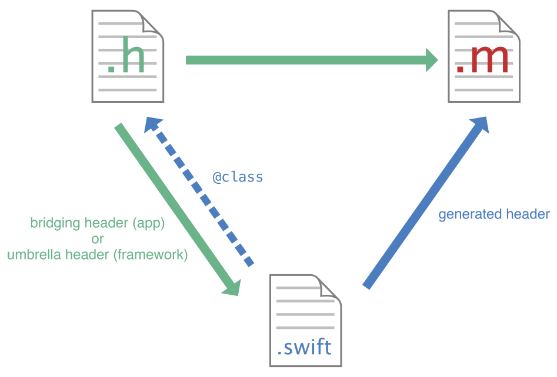

Mix and Match Overview
Objective-C and Swift files can coexist in a single project, whether the project was originally an Objective-C or Swift project.
Using Obj-C in your Swift project
Most common case, each time you want to write an iOS app in Swift you face this situation using cocoa touch!